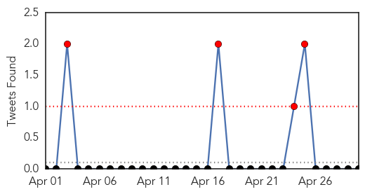
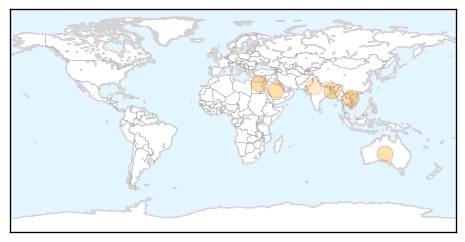
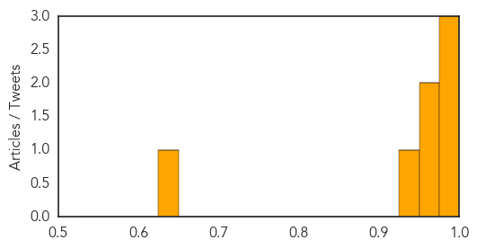
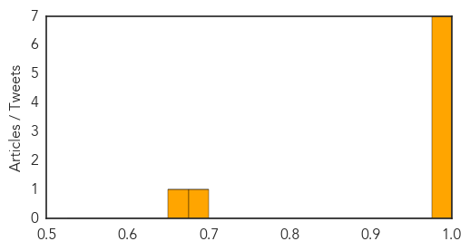

Influenza
30-Day Web Trend
3 alerts, 5 warnings

30-Day Twitter Trend
4 alerts, 0 warnings

Article Locations
Article Confidences
Top Articles:
- 0.999
- Upsurge in MERS Corona Virus Due to Warmer Weather
- 0.999
- WHO: Upsurge in MERS Corona Virus Due to Warmer Weather
- 0.986
- Rare feat for Bangladesh expert
- 0.962
- bioCSL supports public health efforts in Laos with donation of more than 700,000 doses of seasonal influenza vaccine
- 0.958
- Flu spreading at rapid rate in South Australia
- 0.939
- Influenza, Strep were present in two who died in Pulaski Co. last week
- 0.648
- WHO’s first global report on antibiotic resistance reveals serious, worldwide threat to public health
Top Tweets:
-
No tweets found for Apr 30, 2014
Ebola
30-Day Web Trend
0 alerts, 5 warnings

30-Day Twitter Trend
1 alerts, 0 warnings

Article Locations

Article Confidences
Top Articles:
- 1.000
- Ebola outbreak under control, says Guinea president
- 0.999
- Stay Away from Camel Milk and Egyptian Tomb Bats
- 0.999
- Ghana, Business Advice, Jobs, News, Business Directory, Real Estate, Finance, Forms, Auto
- 0.999
- West Africa Ebola crisis: awareness campaigns the key to halting outbreak
- 0.999
- Mob attacks Ebola treatment centre in Guinea, suspected cases reach Mali
- 0.998
- Malaysians in EVA countries told to remain vigilant - Nation
- 0.981
- In praise of CDC's heroic 'disease detectives'
- 0.683
- Liberia: Liberia: Ebola virus disease - Emergency Appeal n MDRLR001
- 0.669
- Liberia: Ebola virus disease - Emergency Appeal n° MDRLR001 - Liberia
Top Tweets:
-
No tweets found for Apr 30, 2014